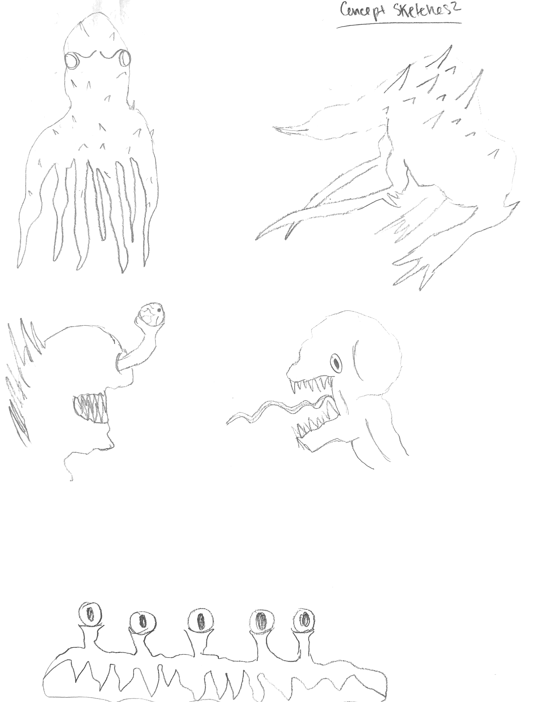

Description
Diving deep into the unknown, this animation features hand modeled, sculpted, and painted objects
depicting an alien planet and its inhabitants. What little we know about the universe and what lies
outside of our solar system allows us to be infinitely imaginative when creating depictions of
extraterrestrial beings and their surroundings. Creepy Creature was made to explore the realm of
the unknown and spark interest in space exploration.
Software: Blender
Audio: Crystalline by Amulets
Goal: Model and animate an imaginary creature.
Timeline: 2 Weeks
Constraints: Built in Blender
Initial design sketches:
